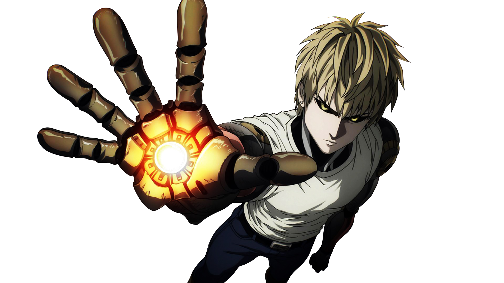

Genos, conhecido como o "Ciborgue Demônio" (Oni Saibōgu),é o deuteragonista de One-Punch Man, um ciborgue de 19 anos e discípulo dedicado de Saitama. Herói Classe S (Rank 14), ele busca poder para destruir o ciborgue que matou sua família. Ele se mudou para o apartamento de Saitama, agindo também como um companheiro próximo.

Para saber mais sobre Genos, visite o site da Fandom